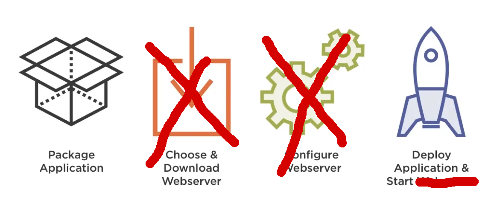

17.10.2019
Khôi Tran tran@puzzle.ch
Rocket.chat:
https://chat.puzzle.ch/channel/spring-workshop
Presentation materials:
https://puzzle.github.io/spring-workshop [github]
Getting to know some tools of the Spring (Boot) ecosystem to make your life (hopefully) easier.
Testing
AOP
Cache abstraction
WebFlux / WebClient
Free time to experiment and explore
Spring applications were a mess of XML files meshed together.
Spring Boot facilitates setup, configuration of spring applications.


@SpringBootApplication
@RestController
public class MinimalApplication {
public static void main(String[] args) {
SpringApplication.run(MinimalApplication.class, args);
}
@GetMapping
public String index() {
return "Hello World";
}
}@SpringBootApplication@Component, @Configuration, @Controller, @RestController, @Service, @RepositoryThis means that most spring related things don't matter in which file they are configured, as long as the class is properly annotated.
// HelloWorldController.java
@RestController
public class HelloWorldController {
@GetMapping
public String printHelloWorld() {
return "Hello World";
}
}Dependency Injection is handled by Spring DI.
It can inject objects annotated with @Bean and Spring @Component and alike.
Field based injection
// HelloWorldService.java
@Service
public class HelloWorldService {
public String getMessage() {
return "Hello World";
}
}// HelloWorldController.java
@RestController
public class HelloWorldController {
@Autowired
private HelloWorldService helloWorldService;
@GetMapping
public String printHelloWorld() {
return helloWorldService.getMessage();
}
}Constructor based injection
// HelloWorldController.java
@RestController
public class HelloWorldController {
private HelloWorldService helloWorldService;
// No need for any annotations
public HelloWorldController(HelloWorldService helloWorldService) {
this.helloWorldService = helloWorldService;
}
// ...
}@Service
@Primary
public class BeerService implements DrinkService {
// ...
}@Service
@Qualifier("stayAwakeService")
public class CoffeeService implements DrinkService {
// ...
}@Controller
public class DrinkController {
@Autowired
@Qualifier("stayAwakeService")
DrinkService myService; // CoffeeService - by @Qualifier anootation
@Autowired
DrinkService beerService; // BeerService - by field name
@Autowired
DrinkService service; // BeerService - by @Primary annotation
public Iterable<Drink> getAllDrinks() {
return repository.findAll();
}
}Read more: 1
@Value("${brewery.name}")
private String breweryName;
// with default value
@Value("${brewery.defaultBeer:Puzzle Spezialbräu}")
private String defaultBeer;// application.yml
brewery:
name: Trappistes de Puzzle
defaultBeer: Puzzle Malz Spezial@Component
@ConfigurationProperties(prefix = "brewery")
@Data
public class BreweryProperties {
private boolean brewsCoffeeToo;
private String defaultBeer;
private String name;
}@Service
public class BreweryService {
@Autowired
BreweryProperties breweryProperties;
public String getBreweryName() {
return breweryProperties.getName();
}
}SPRING_PROFILES_ACTIVE=dev (comma delimited)java -Dspring.profile.active=devSpringApplication.setAdditionalProfiles(...)application-dev.yml
spring.profiles.include:
# include application-localdb.yml
- localdb
# include application-nosecurity.yml
- nosecurity@Configuration
public class WebClientConfiguration {
@Value("${webclient.password}")
String password;
@Profile("local")
@Bean
public WebClient webClientWithoutAuth() {
return WebClient.builder()
.build();
}
@Profile("!local")
@Bean
public WebClient webClientWithAuth() {
return WebClient.builder()
.defaultHeaders(headers -> headers.setBasicAuth("user", password))
.build();
}
}sdk install java 11.0.3.hs-adptgit clone git@github.com:puzzle/beerio.git / git clone https://github.com/puzzle/beerio.gitmvn spring-boot:run Start your applicationoc login https://techlab.openshift.choc new-project sbw-2019-$(whoami)git clone https://github.com/puzzle/beeriofabric8.namespace in pom.xml to your openshift projectmvn fabric8:deployIn BeerController:
@PostMapping
public void addBeer(@RequestBody Beer beer) {
// ...
}
Add a REST endpoint which returns the top 10 beers with highest abv (alcohol by volume)
Hint: Method name keywords
Hint: Limiting results
Spring uses Jackson ObjectMapper to serialize JSON.
@Bean to overwrite the ObjectMapper that pretty prints JSON.git@github.com:puzzle/beerio-admin.gitfabric8.namespace in pom.xmlSpringBootAdminApplication locallyspring.boot.admin.client.url: http://localhost:8081mvn fabric8:deploy to deploy spring-boot-admin to openshiftHints:
spring.boot.admin.client.url: http://beerio-admin:8081
spring.boot.admin.client.instance.prefer-ip: true

Why? Spring brings it's own testing framework.

@Autowire will inject @MockBean and @SpyBean instead of their "real" counterparts.@RunWith(SpringRunner.class)
@SpringBootTest
public class MyTests {
@Test
public void contextLoads() {
}
}Caveats: Will initialize the whole Spring Boot application (and it will take a long time).
--> It is recommended that you only load and test parts of your application.
@RunWith(SpringRunner.class)
@SpringBootTest(classes = {BeerService.class})
public class BeerioTests {
@Autowired
BeerService beerService;
@MockBean
BeerRepository beerRepository;
@Test
public void beerServiceTest() {
// Mock dependencies
when(beerRepository.findAll())
.thenReturn(singleton(Beer.builder().name("Bärner Müntschi").build()));
// Asserts
assertThat(beerService.findAll())
.hasSize(1)
.extracting(Beer::getName)
.containsExactly("Bärner Müntschi");
verify(beerRepository, times(1)).findAll();
}
}The smaller your context, the better!
@RunWith(SpringRunner.class)
@SpringBootTest(classes = {BeerService.class},
properties = "brewery.name=Verein Roggemoser")
public class BeerioTests {
// ...
}Why?
Further separation of business and other(?) code.
With great power comes great responsiblity. - Uncle Ben
Spring supports AOP without AspectJ weaving... BUT only on Spring managed @Beans.
Access to Beans are being proxied by Spring.
@Aspect
@Component
public class ExampleAspects {
@Before("execution(* ch.puzzle..*.*(..))")
void onBefore(JointPoint jp) {
}
@After("execution(* ch.puzzle..*.*(..))")
void onAfter(JointPoint jp) {
}
}@Aspect
@Component
@Slf4j
public class ExampleAspects2 {
@Around("execution(* ch.puzzle..*.*(..))")
void around(ProceedingJointPoint jp) {
return jp.proceed();
}
@AfterThrowing(pointcut = "execution(public * ch.puzzle..*.*(..))", throwing = "e")
void onException(Exception e) {
// Additional error handling
}
}@Aspect
@Component
@Slf4j
public class ExampleAspects2 {
@Around("@annotation(org.springframework.web.bind.annotation.GetMapping)")
Object getOperations(ProceedingJoinPoint joinPoint) throws Throwable {
log.trace("Before");
Object result = joinPoint.proceed();
log.trace("After");
return result;
}
}Use @Around to measure time used in CountryController::findAllCountries()
Hint: System.currentMillis() to take time or Springs org.springframework.util.StopWatch to measure time.
Sometimes performance does matter.
@Configuration class the @EnableCaching annotation@Cacheable("myCacheName")Use @Cacheable on CountryService::findAllCountries().
See improved performance thanks to your AOP logging!
Try to use Spring Cache with Caffeine or EhCache as caching backend.
Reactive programming in Spring.
The introduction to Reactive Programming
Similar to:
Reactive programming is programming with asynchronous data streams.
Reactive programming libraries give you a toolbox to work with those streams.


Reactive has
Make a server sent event stream with this signature:
@GetMapping(value = "beers", produces = MediaType.TEXT_EVENT_STREAM_VALUE)
@ApiOperation("beers")
public Flux<ServerSentEvent<Beer>> beerAnnouncer() {
// Send all 3 seconds a beer in NON-BLOCKING manner (don't use Thread.sleep)
}@PutMapping for users to recommend a beer by ID.Hint: Use FluxProcessor<Beer, Beer> to create a stream. Use FluxProcessor::sink() for a way to recommend beers.
<!-- Spring Security Core -->
<dependency>
<groupId>org.springframework.security</groupId>
<artifactId>spring-security-core</artifactId>
</dependency>
<!-- Spring Security Config -->
<dependency>
<groupId>org.springframework.security</groupId>
<artifactId>spring-security-config</artifactId>
</dependency>
<!-- Spring Security Web -->
<dependency>
<groupId>org.springframework.security</groupId>
<artifactId>spring-security-web</artifactId>
</dependency>@EnableWebSecurity annotation must be present.
Everything is protected. A user with username "user" is automatically generated.
The password is displayed during start of the application.
@EnableWebSecurity
public class SecurityConfig extends WebSecurityConfigurerAdapter {
@Override
protected void configure(HttpSecurity http) throws Exception {
super.configure(http);
http.authorizeRequests()
.antMatchers("/api/country").permitAll()
.antMatchers("/api/beer").hasRole("USER");
}
}